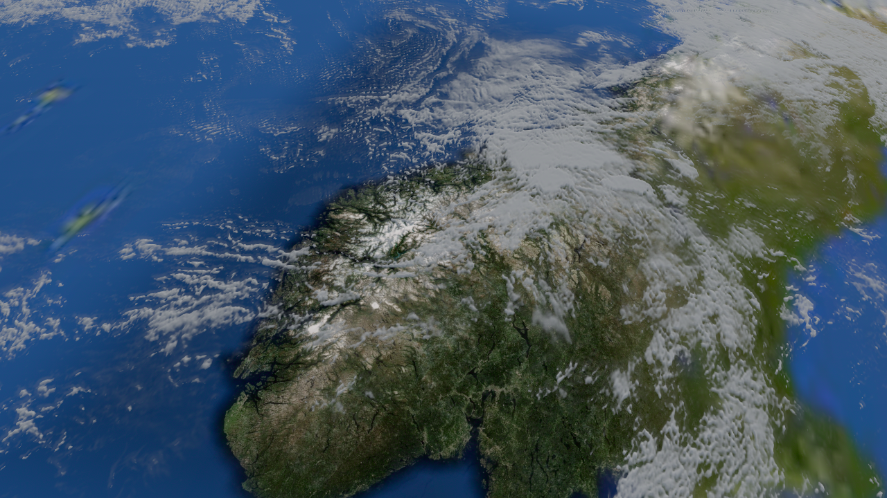
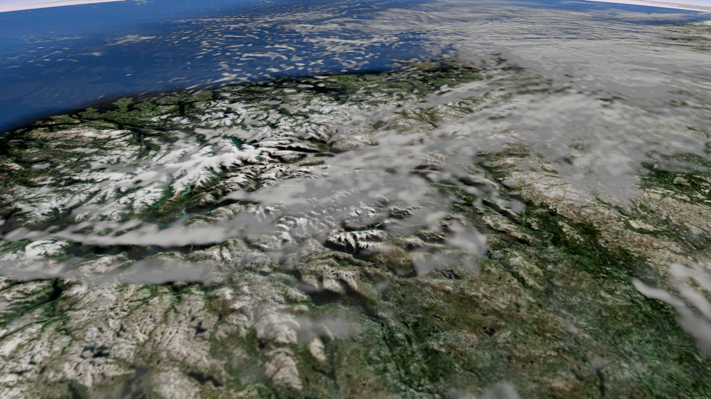
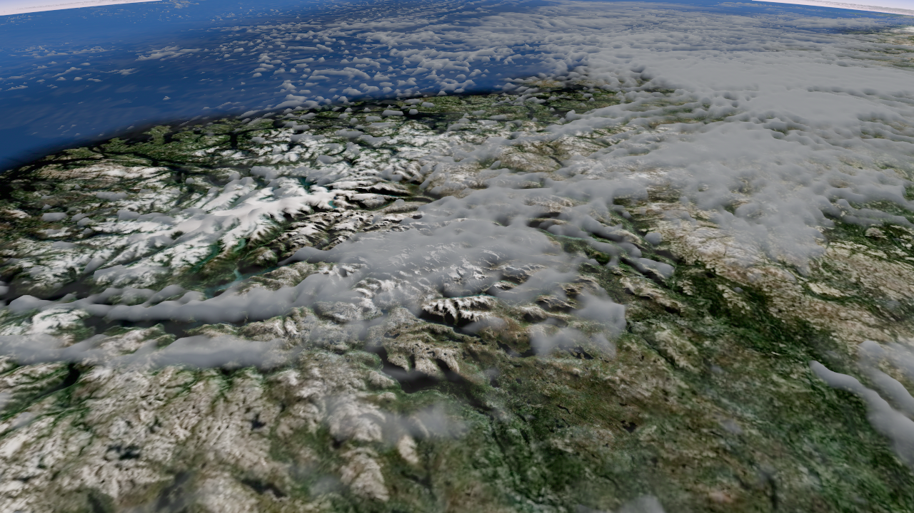

확대 지형 근처 배치와 구름 양은 유지하고, 오른쪽 후보에 군집 높이와 태양 방향의 구름 내부 가림을 적용했습니다. 얇은 구름은 기존 표현을 유지합니다.
TUNE. 평면보다 솟은 군집과 그늘이 보입니다. 매끈하고 둥근 표면은 남아 있으며, 구름 내부로 들어가는 완전한 볼륨은 아닙니다.
실제 화면 · 구름 양감 메뉴 · 검증 기록



자동 카메라 경로입니다. 직접 휠/장시간 품질 검증은 아닙니다.